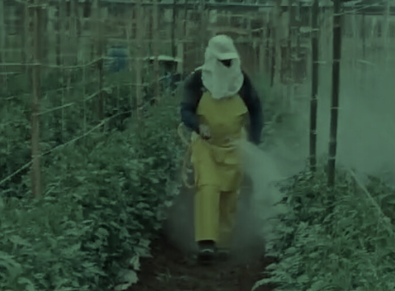
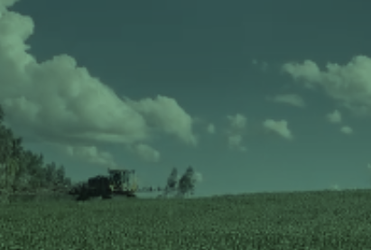

Foto 1: Produtor passando pesticida em sua plantação
Fonte: Autoria própria (2024)
Foto 2: Produtor passando herbicidas em sua plantação

Fonte: Autoria própria (2024)
Foto 3: Produtor passando fungida em sua plantação

Fonte: Autoria própria (2024)
Foto 4: Produtor passando nematicida em sua plantação
Fonte: Autoria própria (2024)
Foto 5: Uma estufa para proteger as verduras de pragas

Fonte: https://www.pexels.com/pt-br/foto/flores-jardim-agricultura-crescimento-25267679/. Acesso 7 de agosto de 2024